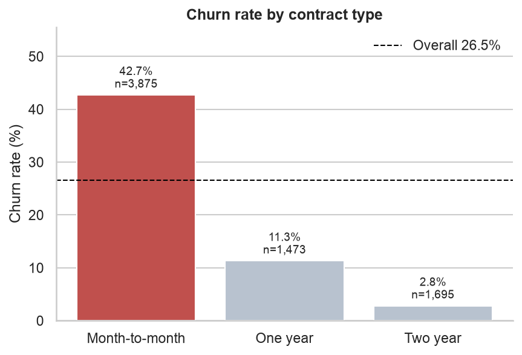
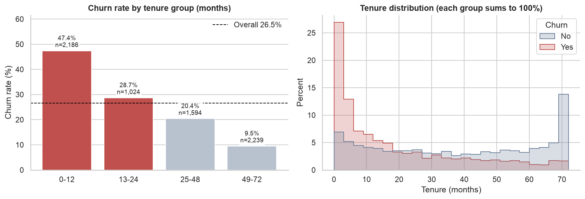
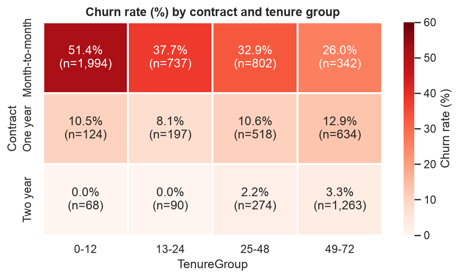
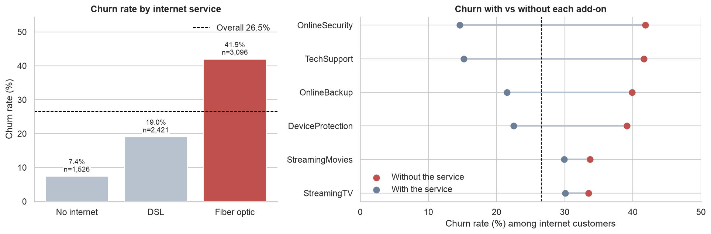
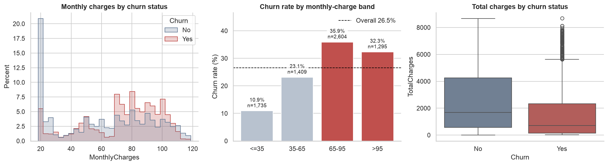

Customer Churn Prediction – End‑to‑End Data Science Project
Goal: Identify customers at risk of churn, quantify revenue exposure, and provide actionable insights for a retention team.
Project Overview
The repository contains the full pipeline: data download → cleaning → feature engineering → model training → interpretation → risk segmentation → Power BI specification.
Exploratory Data Analysis (EDA)

Figure 1 – Churn rate by contract type

Figure 2 – Churn rate by tenure groups

Figure 3 – Contract distribution across tenure

Figure 4 – Internet service and protective add‑ons vs churn

Figure 5 – Monthly & total charges by churn status